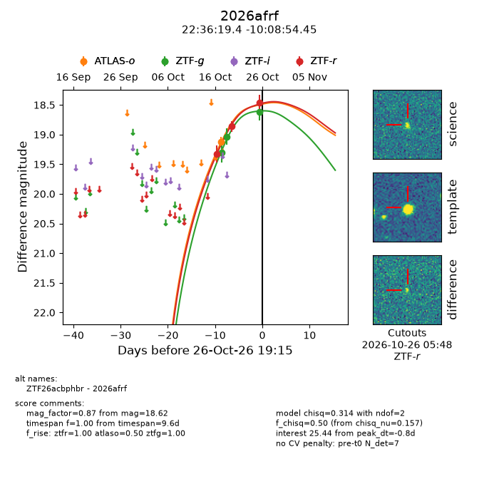
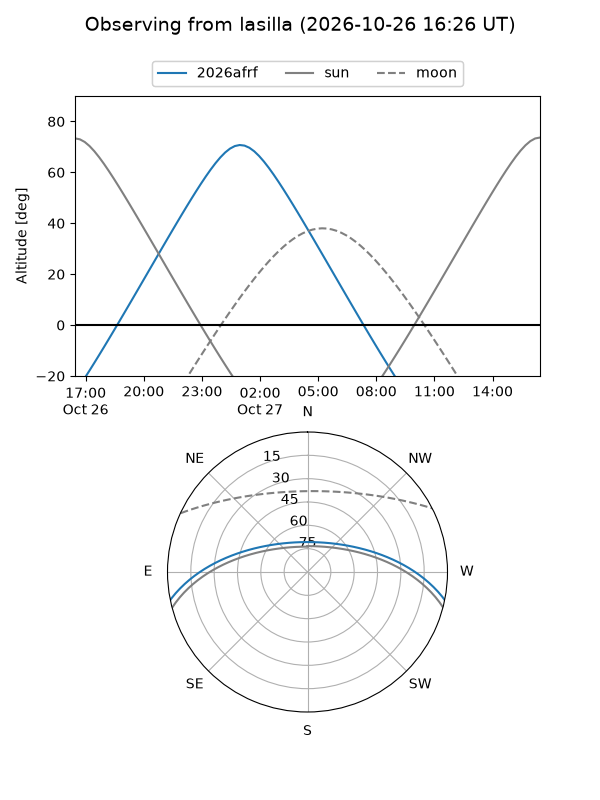
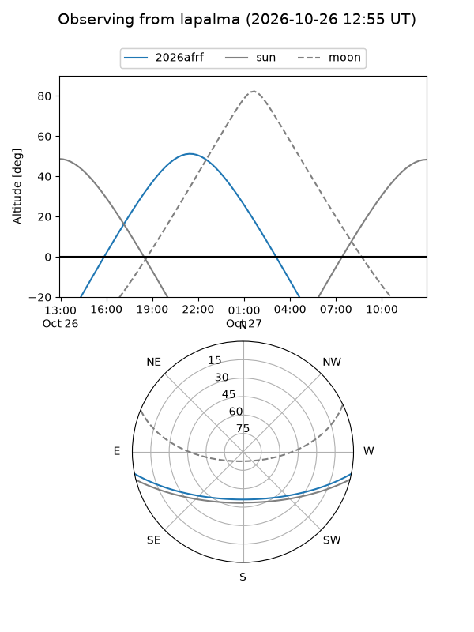
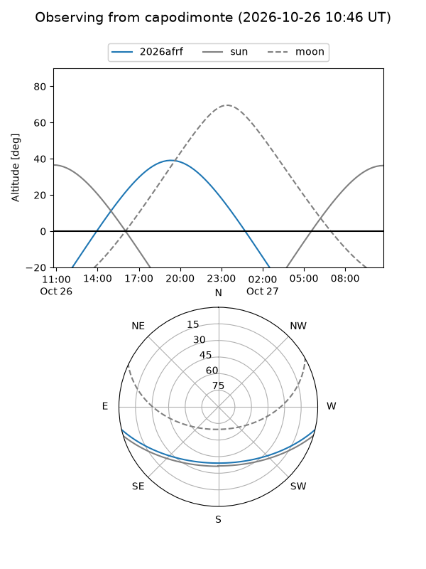
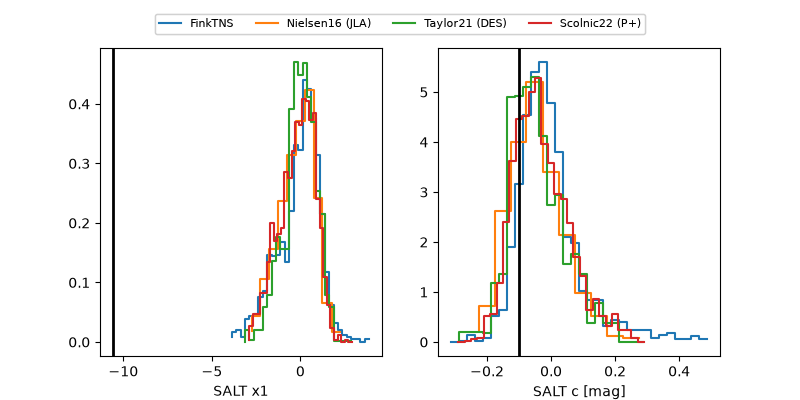

2026afrf
Target 2026afrf at 2026-10-27 07:11
Aliases and brokers:
FINK-ZTF: ztf.fink-portal.org/ZTF26acbphbr
Lasair-ZTF: lasair-ztf.lsst.ac.uk/objects/ZTF26acbphbr
ALeRCE-ZTF: alerce.online/object/ZTF26acbphbr
YSE-PZ: ziggy.ucolick.org/yse/transient_detail/2026afrf
TNS name: wis-tns.org/object/2026afrf
Direct TNS query: direct search
alt names
ZTF26acbphbr (ztf,fink_ztf)
2026afrf (tns,yse)
Coordinates:
equatorial (ra, dec) = 339.0809,-10.14846
equatorial (HMS+DMS) = 22:36:19.42,-10:08:54.45
galactic (l, b) = (54.4939,-53.95175)
Flags:
peak dt: -0.3
Photometry:
last atlaso=19.12, ztfg=18.62, ztfr=18.46
1 atlaso, 3 ztfg, 3 ztfr detections
Lightcurve

Visibility



Additional plots
